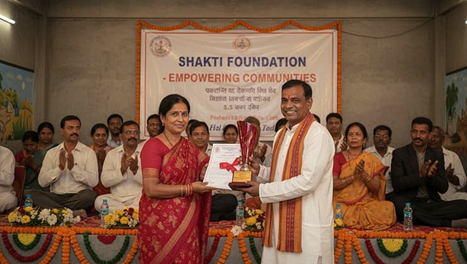

Best Social Activist Award
Presented by Parmporul Foundation
This award recognizes outstanding contributions toward social welfare, community development, and humanitarian initiatives. Through dedicated service and impactful programs, the foundation has positively influenced the lives of many individuals and communities.
